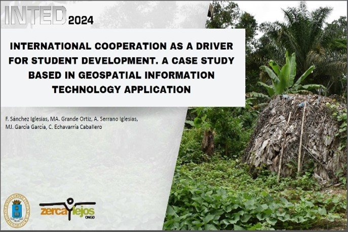

EELISA Green Planet
European Engineering Learning Innovation and Science Alliance - Green Planet Community
Desde 2021 – en curso. Financiado por: Unión Europea + Autofinanciación
El proyecto European Engineering Learning Innovation and Science Alliance (EELISA) es la primera alianza de instituciones de educación superior de diferentes países de Europa destinada a definir e implementar un modelo común de ingeniero europeo arraigado en la sociedad.
Los miembros del Grupo de Investigación geoespacial y dinámicas territoriales para la sostenibilidad (GEOSO2) se alinearon con esa idea y forman parte de la Comunidad Green Planet desde el inicio del proyecto (2021). La misión de Green Planet es preservar nuestro planeta verde con tecnología inteligente. Específicamente, nuestro objetivo general es lograr bosques y tierras agrícolas saludables y ciudades más verdes cumpliendo con el objetivo de Hambre Cero y otros ODS.
En ese contexto, GEOSO2 ofrece actividades académicas, vinculadas con entidades y empresas, que contemplan un alto grado de compromiso social y de contacto con las necesidades de la sociedad. En especial, las colaboraciones suelen ser en Trabajos Fin de Grado, Trabajos fin de Máster y Prácticas en empresa, como por ejemplo: Campos de cultivo de subsistencia en el departamento de Dja et Lobo (Camerún): Optimización de su utilidad a través de sistemas de información geográfica. También se ofertan actividades más puntuales (taller, encuentro, seminario, etc.) siempre enfocados a la resolución de un problema real.